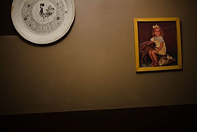
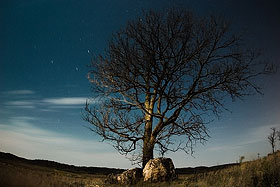
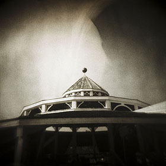
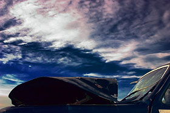

Who says that all that hard work never pays off? This is a collection of links that I am proud of.
If you enjoy my work, subscribe today.
Photos Online
- Sufjan Stevens Playing Banjo was featured at SPIN Magazine in their Fall 2010 Tour preview on September 2, 2010.
- River Rock Bathroom 2 was featured at Flak Photo, the daily photography blogzine featuring distinctive work from an international community of contributors, on April 30, 2007.
- Why Sam is Voting Democrat was featured in the photo gallery of Bending Light Magazine Issue 4: Worth a Thousand Words on November 7, 2006.
- Rock, tree was featured at WeeklyShot in the Dramatic Light theme on November 6, 2006.
- At the flea market was featured at Flak Photo on August 7, 2006.
- a hangar in a field was added as No. 628 in The Collection at FILE Magazine on May 10, 2006.
- untitled was the photo of the day on May 5, 2006 at MUTE.
- Basement 1 was featured in the photo gallery of Bending Light Magazine Issue 2: Angst on March 14, 2006.
- Gazebo was featured at photojunkie SQUARED on March 4, 2006.
- It is snowing again was featured as the No Traces Favorite Photo of the Day on December 18, 2005.
- Outside my tetsubin teapot was featured in the photo gallery of Bending Light Magazine Issue 1: Color on December 15, 2005.
- Busted up truck 1, 2, 3, 4, and 5 were featured in the photography section of Phirebrush (the monthly online art magazine) Issue 34 — December 1, 2005.
- Busted up truck 1 was featured as Photo Friday noteworthy for the “Imperfection” challenge — November 29, 2005.
- Shifting Pixel was featured as Coolstop’s best of the cool daily pick — November 1, 2005.
Photos Offline
- converging lines on a dirt road was used as the album cover for the Avenue Hearts album, “Strangers.”
- chairs 2 was featured on page 7 of the September issue of Pravda, a non-commercial Lithuanian magazine.
- A photo of the Folke Bernadotte Memorial Library at Gustavus Adolphus College was featured on the cover of the Gustavus Quarterly alumni magazine in May, 2007.
- chairs 2, chairs 6, and Cabinets two and three were featured in Metro Screen’s 2007 brochure that was published in November, 2006. chairs 5 made the cover.
- Pink Elephant Revisited, Ring of Fire Revisited, and Inside the Alligator Head appeared in Mix it Up, an invitational art exhibit, at the Arts Center of Saint Peter from October 19, 2006 until November 12, 2006.
- Four photos are featured in Swedish Touches: Recipes and Traditions edited by David Wright and Martha Wiberg Thompson (Penfield Books, October 11, 2006).
- Swanson Tennis Center 1 and Swanson Tennis Center 5 appeared in the Seventh Annual Arts Center of Saint Peter Members Exhibit from July 27, 2006 until September 10, 2006.
Other Projects
- My essay, titled “Total Kenosis, True Shunyata, and the Plerotic Self of Thomas Merton and Abe Masao” was published by the Journal of Theta Alpha Kappa in Spring, 2006.
- Greased Lightbox was featured on productivity blog, Lifehacker, on March 16, 2006.
- Greased Lightbox was featured on the front page of Digg on March 16, 2006